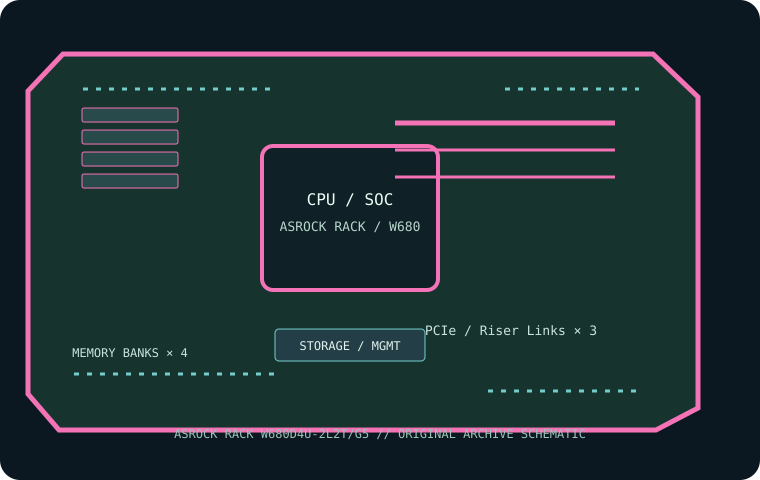

[ INDIVIDUAL COMPONENT // MOTHERBOARDS ]
ASRock Rack W680D4U-2L2T/G5
Micro-ATX LGA1700 W680 server/workstation board with two 10GbE ports and onboard IPMI. This page records the exact printed model and revision policy with manufacturer references.

MODEL / REVISION: Exact ASRock Rack model suffix “/G5” and network suffixes are part of the SKU; record the PCB revision printed on the board and match downloads to this exact SKU.
Specifications
| Exact model / revision | ASRock Rack W680D4U-2L2T/G5 — Exact ASRock Rack model suffix “/G5” and network suffixes are part of the SKU; record the PCB revision printed on the board and match downloads to this exact SKU. |
|---|---|
| CPU and socket | One LGA1700 socket for supported 12th/13th/14th Gen Intel Core processors; Xeon E-2400 family and other CPUs only where explicitly listed for this SKU/BIOS. |
| Chipset / platform | Intel W680. |
| Board size | Micro-ATX, 244 × 244 mm (9.6 × 9.6 in). |
| Memory / ECC / registered | Four DDR5 ECC/non-ECC UDIMM sockets; ECC UDIMM is supported with a compatible CPU. RDIMMs are not supported; capacity/rate depends on CPU and memory QVL. |
| PCIe / lanes | One PCIe 5.0 x16, one PCIe 4.0 x4 and one PCIe 3.0 x1 slot; OCuLink ports expose additional PCIe 4.0 x4/storage connectivity, subject to routing and sharing in the manual. |
| Storage | One M.2 PCIe 3.0 x4 socket, multiple OCuLink/OCuLink-SATA connections and up to eight SATA 6 Gb/s ports depending on connector use. Check the manual’s wiring table. |
| Networking / BMC | Two Intel 10GbE ports and two Intel 1GbE ports. ASPEED AST2600 BMC with dedicated IPMI management LAN. |
| Firmware / compatibility | Use ASRock Rack CPU list, BIOS matrix and exact model manual; don’t cross-flash another W680D4U SKU. ECC requires a compatible CPU and ECC UDIMM. Check OCuLink/SATA allocation and chassis slot clearance before cabling. |
Compatibility and revision notes
Use ASRock Rack CPU list, BIOS matrix and exact model manual; don’t cross-flash another W680D4U SKU. ECC requires a compatible CPU and ECC UDIMM. Check OCuLink/SATA allocation and chassis slot clearance before cabling.
Before installation, verify the physical revision and assembly label, CPU support list and minimum BIOS; confirm the exact memory type (UDIMM versus registered DIMM), channel population, chassis form factor, PCIe lane routing and storage connector modes against the linked vendor manual. A mechanically compatible socket does not guarantee CPU, firmware, ECC or lane compatibility.
Preservation and service
Record BIOS and BMC versions, serial and MAC labels, installed processors and DIMM part numbers, risers/cables, and test conditions. Use ESD-safe handling, correct socket procedure and chassis airflow. Do not cross-flash firmware from a similarly named board or revision.
Sources & further reading
- ASRock Rack — W680D4U-2L2T/G5 specificationsManufacturer reference for the exact board model; use its support/QVL/manual details to verify population and compatibility.
- ASRock Rack — W680D4U-2L2T/G5 user manualManufacturer reference for the exact board model; use its support/QVL/manual details to verify population and compatibility.
Manufacturer model-specific references take precedence. Recheck CPU support, QVL, lane tables and current firmware for the printed board revision before service.